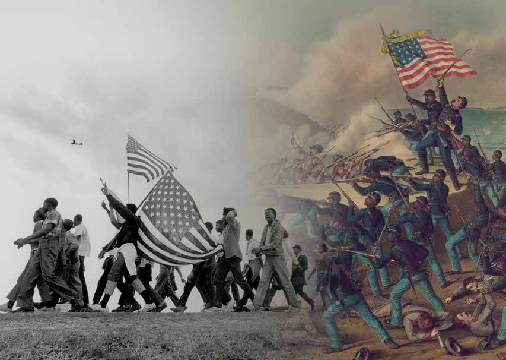
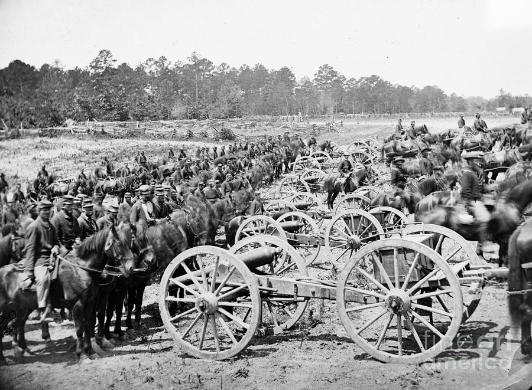

-
Secession, as it applies to the outbreak of the American Civil War, comprises the series of events that began on December 20, 1860, and extended through June 8 of the next year when eleven states in the Lower and Upper South severed their ties with the Union. The first seven seceding states of the Lower South set up a provisional government at Montgomery, Alabama. After hostilities began at Fort Sumter in Charleston Harbor on April 12, 1861, the border states of Virginia, Arkansas, Tennessee, and North Carolina joined the new government, which then moved its capital to Richmond, Virginia. The Union was thus divided approximately on geographic lines. Twenty-one northern and border states retained the style and title of the United States, while the eleven slave states adopted the nomenclature of the Confederate States of America.
-
Fort Sumter is an island fortification located in Charleston Harbor, South Carolina. Originally constructed in 1829 as a coastal garrison, Fort Sumter is most famous for being the site of the first shots of the Civil War (1861-65). U.S. Major Robert Anderson occupied the unfinished fort in December 1860 following South Carolina’s secession from the Union, initiating a standoff with the state’s militia forces. When President Abraham Lincoln announced plans to resupply the fort, Confederate General P.G.T. Beauregard bombarded Fort Sumter on April 12, 1861. After a 34-hour exchange of artillery fire, Anderson and 86 soldiers surrendered the fort on April 13. Confederate troops then occupied Fort Sumter for nearly four years, resisting several bombardments by Union forces before abandoning the garrison prior to William T. Sherman’s capture of Charleston in February 1865. After the Civil War, Fort Sumter was restored by the U.S. military and manned during the Spanish-American War (1898), World War I (1914-18) and World War II (1939-45).
The Civil War confirmed the single political entity of the United States, led to freedom for more than four million enslaved Americans, established a more powerful and centralized federal government, and laid the foundation for America's emergence as a world power in the 20th century. Though freedom did not lead to equality for former slaves, the Civil War initiated immense constitutional changes that re-defined the nature of American society and acted as a point of departure in the struggle for equal civil and human rights.
The war began when the Confederates bombarded Union soldiers at Fort Sumter, South Carolina on April 12, 1861. The war ended in Spring, 1865. Robert E. Lee surrendered the last major Confederate army to Ulysses S. Grant at Appomattox Courthouse on April 9, 1865. The last battle was fought at Palmito Ranch, Texas, on May 13, 1865.
